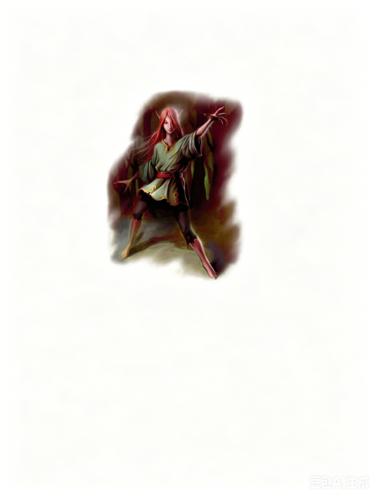

中型精类（虚体） | 挑战级数 5你面前站着一个冷酷却美丽的、虚幻的存在。它看起来有点像精灵，但那野性的微笑和闪烁如宝石的双眼出卖了它的真正身份。
愉悦妖 ―― 通常为中立邪恶。
| 生命骰 | 6d6+6（27HP）；DR 5/寒铁 |
| 先攻 | +7 |
| 速度 | 飞行 30 英尺 (完美) (6格) |
| 防御等级 | 17，接触 17，措手不及 14（+3敏捷，+4偏斜）；失手率 50% (虚体) |
| 基本攻击/擒抱 | +3 / ― |
| 近战攻击 | 虚体接触 +6 (1d4 魅力伤害) |
| 占据/触及 | 5 英尺 / 5 英尺 |
| 特殊动作 | 情绪吸取 |
| 特殊能力 | 昏暗视觉、情绪感知 60 英尺 |
| 豁免 | 强韧 +3，反射 +8，意志 +6 |
| 属性 | 力量 ―，敏捷 17，体质 12，智力 13，感知 12，魅力 19 |
| 技能 | 唬骗+13，交涉+8，易容+4 (+6表演)，躲藏+16，威吓+6，自然知识+8，位面知识+5，聆听+12，察言观色+10，侦查+12，生存+10 (在地表自然环境中+12) |
| 专长 | 警觉、精通先攻、追踪 |
| 语言 | 通用语、木族语、Khen-Zai (《FF》65页) |
| 进化 | 通过角色等级提升 |
| 偏好职业 | 游荡者 (见文本) |
情绪感知 (Su)：此能力类似盲感，但愉悦妖只能感知活物的存在和位置。
情绪吸取 (Su)：当愉悦妖将某个生物的魅力值降低至 0 后，它可以作为一个标准动作完全吸取该生物的情绪。被吸取情绪的生物无法受到士气奖励或惩罚的影响，无法狂暴，也无法从任何灵感或情绪衍生的能力中获益。此外，该生物对恐惧效果免疫。
此情绪吸取效果只能通过找到并消灭施加该效果的愉悦妖，或者在受影响生物处于圣居范围内施放移除诅咒来解除。
技能：愉悦妖在躲藏检定中具有 +4 种族加值。
愉悦妖美丽而迷人，残酷到超越凡人理解。它们以情感为猎物，汲取恐惧，以偷窃他人的情绪为乐。它们曾经是以太主宰 (ethereal master) 的仆从，如今却徘徊于城市的街巷，或与其他妖精一同穿梭于森林中。
生态与起源：愉悦妖的存在充满矛盾。它们被束缚于以太位面，却永远渴望来自物质位面的生物情感。愉悦妖的祖先是那些以凡人情感为食的非光明妖精。当以太幽魂 (ethergaunts，自称"khen-zai"，见《FF》64页) 决定重新征服物质位面时，他们寻求适合作为情感净化和肉体消灭工具的奴隶。愉悦妖正是理想的选择――它们是以物质为基础的生物，却能够摧毁其他物质生物的情感。黑以太幽魂开始组建庞大的愉悦妖军队，而这些妖精的能力对以太幽魂那"完美"的心灵毫无影响。
愉悦妖数量本来就不多，很快全被 khen-zai 捕获。通过魔法改造和长期适应以太存在，愉悦妖变得虚幻，部分与以太位面融为一体。愉悦妖已被束缚在以太位面长达千年，几乎超出凡人记忆和记录的范畴。然而，它们依然渴望凡人世界的感情与激情。在以太幽魂的奴役下，愉悦妖变得极其残酷邪恶。即使逃离了以太幽魂的统治，它们仍保留着这种暴虐的本性，愿意为片刻偷窃而来的情感欢愉，永远吸取凡人的情绪。和所有妖精一样，愉悦妖寿命极长，成熟速度缓慢。
环境：愉悦妖如今与以太位面密不可分，但在被奴役前，它们是生活于城市中的妖精。它们最有可能出现在大城市中，那里的居民日常生活中充满了丰富的情感。为了避免引起注意，大多数愉悦妖只会吸取社会边缘人群的情绪能量，除非处于绝境。贫民窟和海滨是它们偏爱的活动区域，而其他生物的存在也能帮助它们在捕食后隐藏自己，躲避追捕。
典型体貌特征：愉悦妖外貌纤细，像极了极度苍白的精灵，留着长发，拥有中性特征。它们以人类的审美来看冷艳迷人，但眼睛立刻暴露了它们的本质。它们的眼睛如宝石般发光，没有瞳孔。饥饿时，眼睛呈深红色；吸取了情感后，它们的眼睛会发出金光。典型的愉悦妖约 5 英尺高，体型轻盈。
阵营：愉悦妖只关心自身的利益，完全不在意自己的行为对他人造成的影响。基于这种标准，它们在转变前就已被认为是邪恶的。如今，它们的怨恨与绝望更使其灵魂变得黑暗无比。愉悦妖通常为邪恶中立。
"愉悦妖"这个名字是受到它们袭击的幸存者出于恐惧而起的称呼。而它们自称为因索瑞尔 (Insoril)。
因索瑞尔是极为特殊的一类妖精，因为它们适应了城市环境。随着人类进入荒野，大多数妖精选择避让，而因索瑞尔却留下来了，因为人类的情感强烈而丰富，比其他妖精、精灵等生物的情感更美味，也更容易采摘。如果几只因索瑞尔原本生活在河边，那么它们会留下来定居在城市的码头和小巷中；如果它们曾栖息于森林，那么它们会徘徊于新兴小镇的公园和后街。
因索瑞尔认为自己是世界上不可或缺的一部分，吸取多余的情感，以避免冲突或痛苦。事实上，它们为自己的角色感到自豪。它们视自己的行为为一种更高层次的行动，与充满鲜血的狩猎或艰苦的耕种不同。然而，在被以太幽魂奴役后，因索瑞尔被迫充当简单的猎手，这种屈辱让它们深感不满。但即便逃离了奴役，它们的觅食行为也变得不再从容优雅，而是充满绝望的挣扎。它们憎恨以太幽魂对它们纯洁本性的玷污。然而，对于其他智慧生物而言，愉悦妖仍然像往常一样自私且可怕。
单独行动的愉悦妖常以言行诱惑凡人，试图激发爱意或快乐，搭配一丝惊讶和恐惧作为"美味"。若被迫战斗，它只会停留到将一个活物的魅力值降至 0 为止，然后利用情绪吸取能力后迅速逃跑，消化所偷窃的情感。
愉悦妖成群行动时，通常会从伏击开始战斗，将自己部分藏于固体物体内。尽管它们并非隐形，但这些虚体生物在躲藏检定中享有卓越的种族加值，并利用阴影、杂物或灌木丛等掩护物。如果能够奇袭，它们会集中攻击一个目标，将其迅速削弱至无助状态。其优秀的反射能力使它们在突袭回合后有很大机会令对手措手不及，从而可能迅速放倒第二个目标。
愉悦妖经常成群结队以提高效率，摄取任何强烈的情感――恐惧尤为常见，特别是在它们持续吸取情绪的过程中。它们有时会与其他残忍的妖精联合行动，由后者利用能力使受害者无力抵抗，从而让愉悦妖吸取其魅力和情绪。它们留下的往往是毫无希望的空壳，这些受害者往往对生活彻底失去兴趣。
单个 (EL 5)：单独的愉悦妖在城市环境或其他情感强烈的地方 (如战场) 构成威胁。有时，单独的愉悦妖可能是在探索新的觅食地，或是更大团体的唯一幸存者。
黑暗恶作剧者 (EL 8)：一个恶意的皮克精喜欢惩罚闯入其领地的凡人，它会使用睡眠箭或奥图迷舞，然后让其两名愉悦妖同伴吸取受害者的情绪。
典型宝藏：在被奴役期间，愉悦妖一无所有。而由于它们是虚体生物，自身也无法拥有任何物质财宝。
拥有职业等级的愉悦妖：NPC 愉悦妖可以通过角色职业进行进阶，大多数选择游荡者职业。少数会成为施法者，但由于虚体生物无法携带物质成分，这对它们是个难题。罕见的愉悦妖牧师通常信仰奈落 (Nerull) 或维婕斯 (Wee Jas)。
等级调整值：+4。
在近一万年前，以太幽魂作为它们创造者异变魔 (Daelkyr) 的仆从，为异界生物在艾伯伦科瓦雷 (Khorvaire) 大陆上自由活动服务。当通往异界的门户关闭后，以太幽魂选择以太位面作为庇护所。随着达坎帝国 (Dhakaani) 衰落，人类开始迁入地精的土地，而愉悦妖则留下来觅食。以太幽魂观察到这一点，并开始将它们作为奴隶收集起来。
在终末战争期间，塞尔 (Cyre) 的战场成为以太幽魂的绝佳基地。在战争的恐怖中，有关能够抽干人类内心激情的生物的传闻并不显眼。最终，只有瑟雷恩 (Thrane) 狂热军队的强烈激情帮助愉悦妖成功逃脱。如今，许多逃亡的愉悦妖徘徊在哀伤之地，隐藏在灰白色的死雾中。旅者们从未怀疑，这些隐藏在迷雾中的虚幻生物可能正是导致他们精神麻木的元凶。
拥有 位面知识 或 自然知识 技能点的角色可以通过成功的检定了解更多关于愉悦妖的信息。根据技能检定的成功难度，角色会获取以下情报，包括低于当前难度的信息。
位面知识：
DC 15：这是愉悦妖，一种与以太位面相连的妖精。这一结果揭示了所有虚体特性。
DC 20：愉悦妖的虚体触摸会吸取希望。这些生物以智慧生物的情感为食。
DC 25：愉悦妖是以太幽魂的逃亡奴隶，后者如今正在追捕它们。
自然知识：
DC 15：这是愉悦妖，一种城市妖精。这一结果揭示了所有妖精特性。
DC 20：愉悦妖已与以太位面绑定，无法再以实体形式存在。这一结果揭示了所有虚体特性。
DC 25：愉悦妖的虚体触摸会吸取希望。这些生物以智慧生物的情感为食。
DC 30：愉悦妖是被古代种族转变为以太生物的产物。